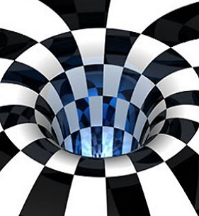

Grafika Dwuwymiarowa - 2D
Grafika dwuwymiarowa - to popularne rozwiązanie. Spotyka się je w wielu dziedzinach. Kolorowe, przykuwające uwagę ilustracje znakomicie sprawdzają się na broszurach, w wystroju stron internetowych lub podczas kampanii reklamowych. Jak wykazują liczne dane, grafika 2D należy obecnie do najskuteczniejszych sposobów na pozyskanie nowych klientów, bez względu na grupę wiekową.
Przykład grafiki 2D
Grafika Ruchoma
Grafika ruchoma to w skrócie grafika z elementami ruchu. Do rodzajów grafiki ruchomej zaliczamy: GIF, MP4, WebM, SWF, APNG. Może obejmować animacje, filmy, przekazy wideo, efekty specjalne i wiele innych. Grafika ruchoma pozwala na ożywienie statycznych obrazów, tworzenie płynnych przejść między różnymi klatkami oraz wywoływanie wrażenia ruchu i dynamiki.
Przykład grafiki ruchomej

Grafika Trójwymiarowa - 3D
Grafika trójwymiarowa jest dziedziną grafiki zajmującą się wizualizacją obiektów trójwymiarowych. W skrócie ten rodzaj grafiki wizualizuje wszystko to, co wyobrazi sobie twórca. Komputerowa grafika 3D używa trójwymiarowej reprezentacji danych geometrycznych, które umożliwiają wprowadzanie różnych zmian, a także renderowanie na ich podstawie obrazów 2D.
Przykład grafiki 3D
